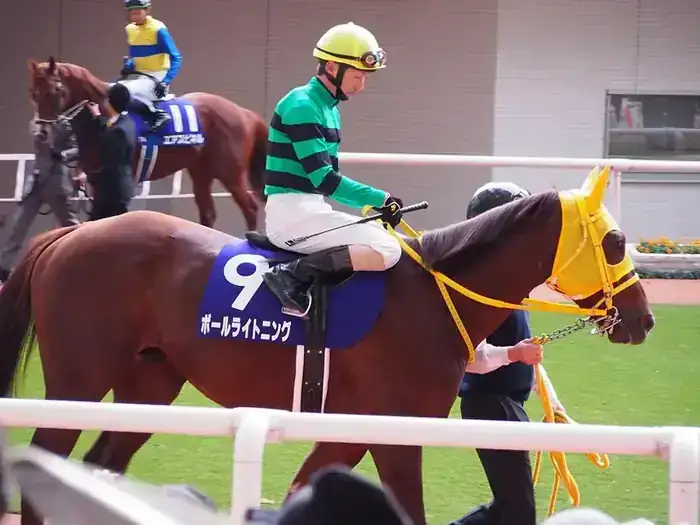
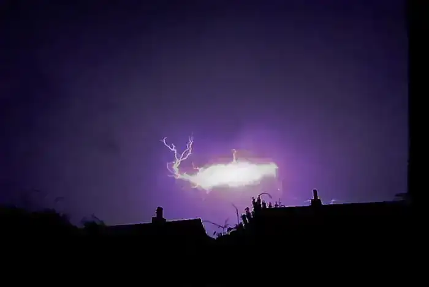

The reports
Ball lightning is described as a luminous sphere, usually 10–30 centimetres across, lasting seconds, drifting or hovering, sometimes passing through a window or a wall, and often ending in a small explosion or a silent fade. Reports go back to the seventeenth century and are unusually consistent across countries and centuries, which is the main reason physicists have kept taking them seriously.
Maps, diagrams and images




The weaknesses are equally clear. Witnesses are startled, the events last seconds, and they happen close to the observer — which is the worst possible setup for a measurement.
The measurements
Two things changed the picture. In 2012 and 2014, Chinese researchers recorded a luminous ball during a thunderstorm with a spectrograph, and the spectrum showed silicon, iron and calcium — soil elements — rather than nitrogen and oxygen from air. That fits a model proposed in 2000: a lightning strike vaporises soil, the vapour condenses into nanoparticles, and the cloud of particles oxidises slowly, glowing.
The other line of work is laboratory: microwave discharges and vapourised silicon can produce glowing, floating structures that look like the descriptions. Neither has produced the thing itself on demand.
Reported: consistently, for four centuries, by many witnesses including scientists.
Measured: at least one spectroscopic record consistent with vaporised soil.
Reproduced: laboratory analogues that resemble the reports, not the phenomenon itself.
Not explained: the reported persistence, the passage through solid surfaces, and the energy budget — a glowing ball lasting seconds needs a source nobody has identified for certain.
The honest label: a real observation without an accepted mechanism. Closer to 'unexplained' than to 'debunked'.
Why it is in the archive
Because it is what a genuine anomaly looks like before it is solved: too rare to study properly, too consistent to dismiss, and surrounded by a fringe literature that has attached everything from aliens to plasma life to it. The archive keeps the reports and drops the attachments.
Open resources on this topic
- BookQiu zhuang shan dian = Ball lightning — Liu, Cixin · 2009 (Internet Archive, free to read)
- BookQiu zhuang shan dian = Ball lightning — Liu, Cixin · 2012 (Internet Archive, free to read)
- BookBall lightning as a possible manifestation of high-temperature superconductivity in Nature — B. L. Birbrair · 2001 (Internet Archive, free to read)
- PapersOpen-access articles: DOAJ · PubMed Central · Internet Archive Scholar
- BooksPublic-domain and borrowable copies: Open Library · Project Gutenberg · Google Books
Cite this page
Momin, S. (2026). Ball Lightning. The Larger World Archive. https://drsamonline.github.io/LARGE_GLOBE/ball-lightning.htmlMomin, Sohil. “Ball Lightning.” The Larger World Archive, 2026, https://drsamonline.github.io/LARGE_GLOBE/ball-lightning.html.Momin, Sohil. “Ball Lightning.” The Larger World Archive, 2026. https://drsamonline.github.io/LARGE_GLOBE/ball-lightning.html.@misc{ball2026ball,
author = {Momin, Sohil},
title = {Ball Lightning},
year = {2026},
howpublished = {The Larger World Archive},
url = {https://drsamonline.github.io/LARGE_GLOBE/ball-lightning.html},
note = {Last reviewed 20 November 2026}
}Last reviewed 20 November 2026 · Corrections policy · this page is not peer reviewed
Sources for this page
- Wikipedia, “Ball lightning” — reports, models and the spectroscopic recorden.wikipedia.org
- Wikipedia, “Lightning” — the ordinary phenomenon it accompaniesen.wikipedia.org
- Abrahamson & Dinniss (2000), Nature — the silicon-nanoparticle modeldoi.org
- Wikipedia, “Plasma (physics)” — what a glowing ionised gas can and cannot doen.wikipedia.org